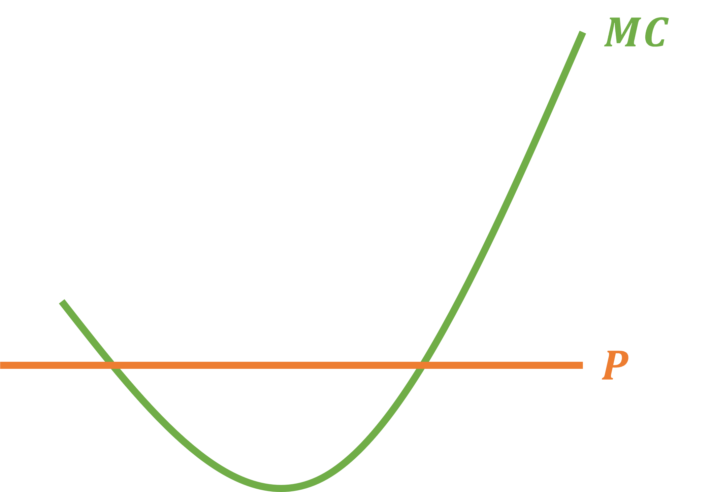

What We Have Done So Far
We learned where the Cost Function \(C(Q)\) comes from
. . .
We also learned about properties of the Cost Function:
- Total Costs
- Variable Costs
- Fixed Costs
- Marginal Costs
- Average Total Costs
- Average Fixed Costs
- Average Variable Costs
. . .
Now we will put the Cost Function to work in order to find a firm’s Supply Function
Let’s First Ask: What Are Profits?
In Economics, we use the Greek letter \(\pi\) (pi) to represent profits
And they follow an intuitive formula:
\[ \pi = \text{Revenue} - \text{Costs} \]
We will also make an important distinction between Accounting Profits and Economic Profits where the difference comes in the costs
. . .
Accounting Profits
Accounting Costs are the direct costs of operatin a business
These are what we think about when we talk about profits in accounting, finance, etc.
Economic Profits
Economic Costs will include Accounting Costs and Opportunity Costs
- Opportunity Costs are all foregone benefits from other possible choices once we do make a choice. We don’t necessarily observe this in the data
. . .
This is important concept once we consider the firm’s optimal profits
Profits
In simpler words, if I sell Revenue (R) worth of goods and I had Costs (C), the profits are:
\[ \pi = R - C \]
. . .
Continuing our trend of putting things in terms of \(Q\), we get:
\[ \pi(Q) = R(Q) - C(Q) \]
. . .
We have already dealt with Costs as a function of \(Q\), that was our Cost Function \(C(Q)\)
Now we will figure out what Revenue as a function of \(Q\) is
Revenue
We define Revenue as:
\[ \text{Revenue} = P \cdot Q \]
. . .
Plugging this into our Profit function gives us:
\[\begin{align*} \pi &= \color{red}{\text{Revenue}} - \text{Cost} \\ \pi &= \color{red}{P \cdot Q} - \text{Cost} \end{align*}\]
This is where Production is simpler:
- Profits are a single-variable function
- This means that the math to maximize profits is straightforward
- We will just take the derivative and set it equal to zero
Maximizing Profit
Let’s solve this profit maximizing problem in the most general form:
\[ \pi = R(Q) - C(Q) \]
. . .
We take the derivative w.r.t. Q and set it equal to zero
\[ \frac{\partial \pi}{\partial Q} = \frac{\partial R(Q)}{\partial Q} - \frac{\partial C(Q)}{\partial Q} = 0 \]
These derivatives have their own name
. . .
\[ \text{Marginal Revenue} - \text{Marginal Cost} = 0 \]
. . .
\[ \text{Marginal Revenue} = \text{Marginal Cost} \]
Maximizing Profits
A firm maximizes its profits by finding the Quantity that makes Marginal Revenue equal to Marginal Cost
\[ MR(Q) = MC(Q) \]
. . .
We can push this a bit further. We had just found the formula for Revenue: \[ R(Q) = P \cdot Q \]
So if we take the derivative of this w.r.t. \(Q\) we will find the Marginal Revenue
. . .
\[ \frac{\partial R(Q)}{\partial Q} = MR(Q) = P \]
. . .
Putting it all together gives us the key to finding maximum profits for a perfectly competitive firm:
\[ P = MC(Q) \]
Profit Maximizing Condition
The firm will be at its maximum profit when they meet the condition \[ P = MC(Q) \]
. . .
From the firm’s perspective, this means they sould produce exactly the level of \(Q\) at which the Marginal Cost of producing another unit is equal to the price it is sold at
. . .
Here’s an intuitive example. Let’s say you earn $5 per unit you produce:
- The first unit costs $1 to make
- You would make it!
- The second unit costs $2 to make
- You make it!
- The third unit costs $4 to make
- You make it!
- The fourth one costs $5.01 to make
- You don’t make it!
Producing to Maximize Profits
So the production decision follows the rules:
- When \(P > MC\), the firm Produces More!
- When \(P < MC\), the firm Does Not Produce
- When \(P = MC\), the firm is Maximizing Profit
Quick Math Note
When the Cost Function is Cubic, the MC Function is Quadratic

This means that Marginal Revenue will equal Price at 2 pionts
The firm will always choose the point of intersection when the Marginal Curve slopes upwards!
Profit Maximization Problem
Let the Cost Function be
\[ C(Q) = Q^{2} + 4Q + 20 \;\;\;\;\; \& \;\;\;\;\; P = 8 \]
1 - Find the Profit Function: \(\;\; \pi(Q) = R(Q) - C(Q)\)
. . .
\[\begin{align*} \pi(Q) &= R(Q) - C(Q) \\ \pi(Q) &= P \cdot Q - C(Q) \\ \pi(Q) &= 8 \cdot Q - (Q^{2} + 4Q + 20) \\ \pi(Q) &= 8Q - Q^{2} - 4Q - 20 \end{align*}\]
Profit Maximization Problem
\[ \pi(Q) = 8Q - Q^{2} - 4Q - 20 \]
. . .
\[\begin{align*} \frac{\partial \pi(Q)}{\partial Q} &= 0 \\ 8 - 2Q - 4 &= 0 \\ 2Q &= 4 \\ Q^{*} &= 2 \end{align*}\]
Another Way to Maximize Profits
Use the fact that Marginal Cost must equal Price
\[ C(Q) = Q^{2} + 4Q + 20 \;\;\;\;\; \& \;\;\;\;\; P = 8 \]
. . .
\[\begin{align*} MC(Q) = \frac{\partial C(Q)}{\partial Q} = 2Q + 4 \end{align*}\]
. . .
2 - Set \(\; MC(Q) = MR(Q) = P \;\)
. . .
\[\begin{align*} MC(Q) &= P \\ 2Q + 4 &= 8 \\ 2Q &= 4 \\ Q^{*} &= 2 \end{align*}\]
Maximizing Profit
The firm can then use the found optimal quantity, \(Q^{*} = 2\), to figure out how much is their maximum profit given their costs and market price
\[ \pi(Q) = P \cdot Q - C(Q) \;\;\;\;\; ; \;\;\;\;\; C(Q) = Q^{2} + 4Q + 20 \;\; ; \;\; P = 8 \]
. . .
Profits
\[\begin{align*} \pi &= P \cdot Q - C(Q) \\ \pi &= P \cdot Q - Q^{2} + 4Q + 20 \\ \pi &= 8 \cdot 2 - \left( (2)^{2} + 4(2) + 20 \right) \\ \pi &= 16 - \left( 4 + 8 + 20 \right) \\ \pi &= 16 - 4 - 8 - 20 \\ \pi &= -16 \end{align*}\]
Profits can be Negative and the optimal choice!
Note the profits that producing 0 goods yields:
\[\begin{align*} \pi(0) &= 8(0) - (0)^{2} - 4(0) - 20 \\ \pi(0) &= -20 \end{align*}\]
Negative Profits
The previous firm’s maximum profit is a loss of $16
Negative Profits can sometimes be the optimal choice
- The firm would have lost more if they had produced zero \((\pi(0) = 20)\)
So even though they lost money, producing something was still better than not producing at all!
Now that we know how profits work, we can begin to find the supply curve